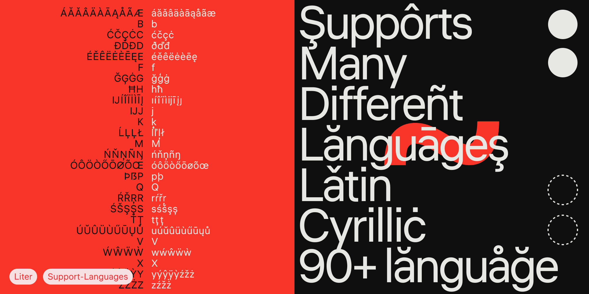
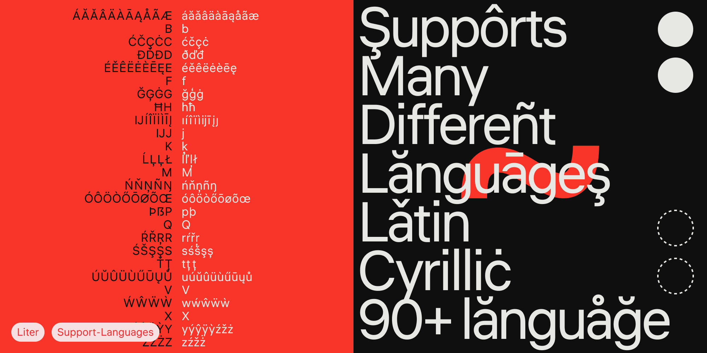

Liter is a modern Neo-grotesque typeface designed for digital screens and inspired by the principles of the Swiss design school. The font is optimized for use at 13, 16, and 19 point sizes. It features low contrast, minimal differences in the heights of uppercase and lowercase letters, and balanced proportions, making it versatile for interfaces, text, and navigation.
The typeface supports multiple languages using Latin and Cyrillic scripts.
To contribute, see github.com/skugiz/liter.
 
